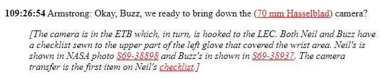
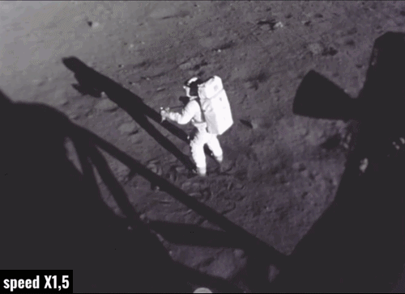
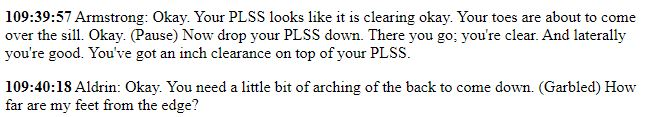
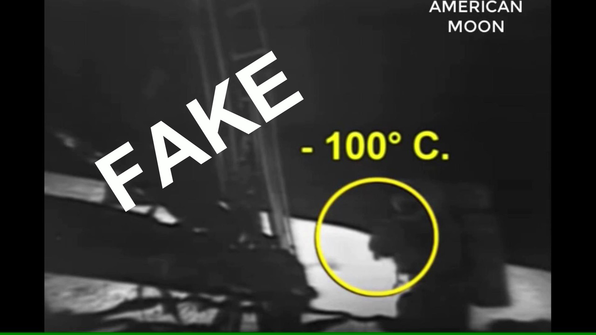
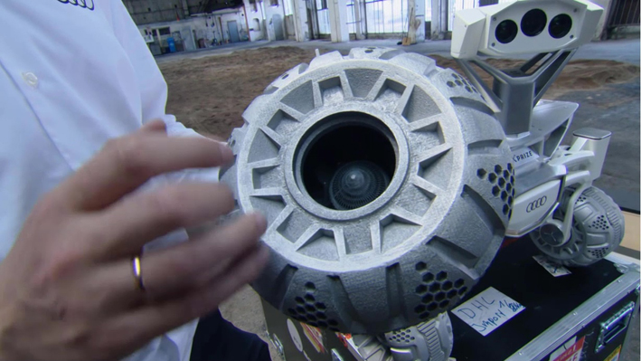
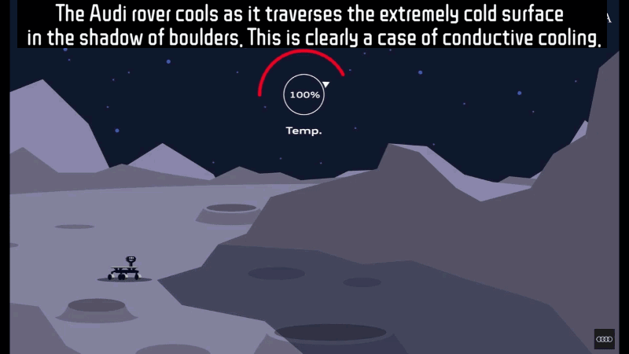

The documentary American Moon makes a completely unfounded claim, speaking of: "a camera, which remained in that shadow for over half an hour"
This is absolutely not true because the procedures for removing the camera from the LEM and the subsequent phases of taking samples defined as "priority in the event of a rapid restart" (contingency sample) would not have allowed it.
The cameras during the approach trip to the Moon were on board the carriers (command module and LEM), so they were kept at room temperature. In Apollo 11, where there was only one camera set up for surface activities, the latter was taken out of the LEM at min. 109:26:54

and only after taking some test photos inside the LEM, as required by the procedure.
From that moment to the next moment when Armstrong comes out of the shadow of the LEM cone just over 5 minutes pass, the time used by Armstrong to take the first photos of the panorama directly from the lunar surface.
In the following minutes, in which Armstrong is filmed by Aldrin on the LEM while collecting the first samples of the lunar soil (contingency sample), the camera is attached to the support of the suit and is exposed to the sun's rays.


Armstrong then returns to the shadow cone for less than a minute and then positions himself in the Sun next to the ladder and waiting for the exit of his teammate Aldrin. And we are at min. 109:40.18

In the short amount of time spent in the shade, carefully timed in this video, (5 min and 53 sec.), no object with a non-negligible mass could start from a temperature of about twenty degrees, which is the one inside the LEM, and lose more than 80 degrees in a few minutes, lowering itself below the generous specifications indicated by Hasselblad for that camera, i.e. -65° and +120°.
The lunar vacuum prevented any loss of heat by convection, no icy moisture penetrated and deposited on the mechanisms and film, the contact of the chassis was only with the astronaut's heated suit and the radiation in the shade needs time, at least several hours to make a massive object like a camera lose so much heat; and there is no need to bother with Stefan-Boltzmann's law to understand it, common sense is enough.
Last consideration: if we exposed a thermometer in a vacuum, the temperature we would obtain would be the temperature of the thermometer probe, which will gradually lower due to radiation, assuming that it is not hit by radiant sources such as the Sun. The LEM landed on a surface previously illuminated by the Sun, during the interminable lunar dawn, and the ground temperature was certainly not the night temperature.
The fact that the LEM has covered the ground again with its own shadow does not lead to this ground cooling instantaneously, as the night cooling, which brings the ground to temperatures below 100 degrees below zero, occurs in more than 14 Earth days of darkness (about 340 hours), as long as the lunar night lasts, And in any case, the camera has never even touched that ground.
The few hours that passed between the moon landing and the first EVA certainly did not allow the ground to reach night temperatures again. Hence the terrible conceptual error demonstrated by this image taken from the documentary, where minus 100 degrees are assigned to the shadow and not to objects such as the LEM or the ground.

Quite different is the discourse on the temperature of the ground in shaded areas created by large boulders, lunar soil that has not yet received morning sunlight and that has maintained the cold at night, and here we come to the example of the Audi rover, and as we will demonstrate, it will be a totally out of context example.
The Audi rover is a small self-propelled automatic vehicle, which would have moved about thirty centimeters above the ground, with thick metal wheels and limited diameter, a rover that was supposed to be used in robotic explorations on the lunar soil.

Given its limited size, the rover could end up in shaded areas produced by boulders and with the ground not yet heated by the Sun: resting those small wheels for several minutes on a ground that still retains the cold at night could have determined, by contact, the rapid drop in the temperature of the vehicle and therefore sent it out of range of operation.
As we can see from this image taken from the animation produced by Audi itself, the rover does not enter the shadow cone of a lunar probe, but enters the shadow cone of lunar boulders, on a ground that has not yet been reached by sunlight and has maintained the night temperature, thanks to the insulating effect of the lunar vacuum.

This explains the recommendation made by Audi for its rover, namely to avoid resting its small wheels on land that has remained in the shade since the previous night and not yet warmed by the sun. But it is precisely this reasoning that makes us understand how the example of the Audi rover is totally decontextualized as the feared cooling of the rover would have occurred by contact with the ground, an eventuality to be absolutely excluded for a camera that is hanging all the time from an astronaut's suit. So what's the point of this example? It doesn't make any sense.
One last piece of information concerns the films: these were made with a special polymer called ESTAR which guaranteed greater thinness to the film (with the possibility of reaching up to 200 photos per magazine), and exceptional resistance to heat and cold.
The astronauts were aware that the heat of the sun on the camera during long extravehicular activities could be a problem (so heat, not cold, could be a problem) and therefore kept the cameras in the shadow of their bodies as soon as possible. However, these special films would have guaranteed astronauts heat resistance of up to 150 degrees.
Chapters: